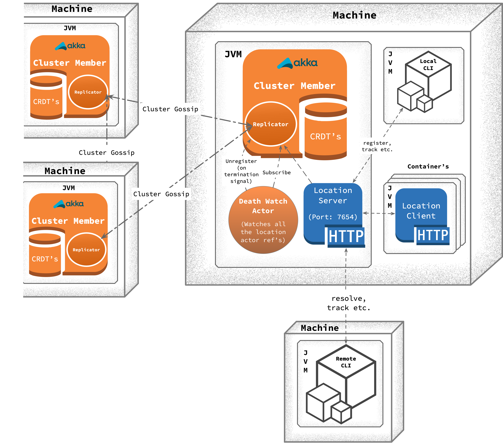
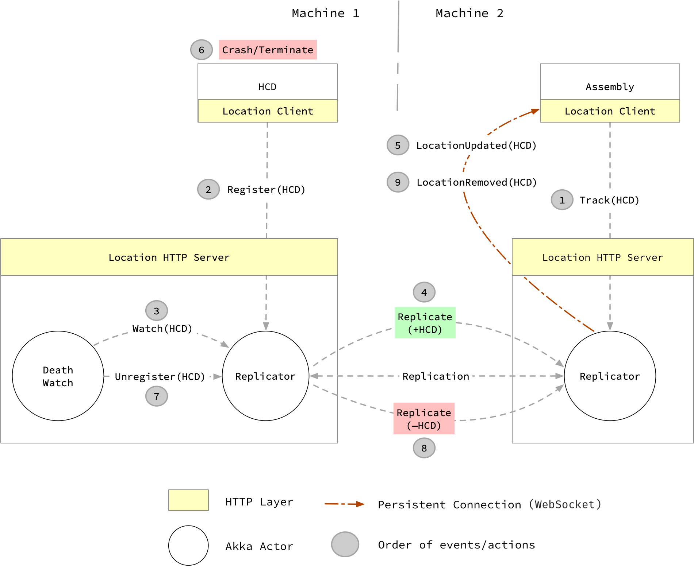
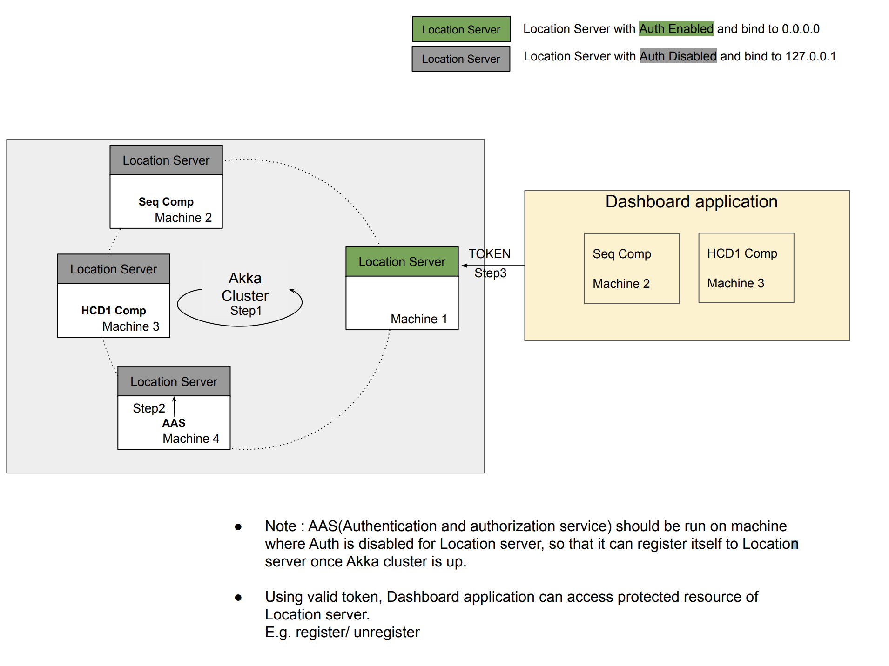

Location Server
Introduction
The csw-location-server project contains the main implementation of the Location Service. Think of it as a agent which is running on every machine. Normally one instance of the Location Server will run on each host that is running CSW services (although clients can be configured to use a remote host).
Design
Main building blocks of location service are captured below, we will go through each one of them in following sections:
- Akka Cluster
- Conflict Free Replicated Data Types (CRDTs): Shares location information within the network.
- Akka HTTP
- DeathWatch Actor

Above diagram shows different parts of Location Service and how it will look like in TMT environment. On a single physical machine, we can have multiple JVM’s (Java Virtual Machines) running. Roughly these JVM’s can be categorized into two types:
Container: It can have single or multiple components (HCD, Assembly etc.) running inside it.Location Service: Think of it as a agent which is running on all the machines in TMT environment.
Here onwards, we will refer to Location Service as agent or server interchangeably. Do not confuse it with csw-location-agent.
Let’s discuss different components of Location Server in following sections:
Cluster Member
Location Service JVM (precisely Actor System) takes part in Akka Cluster. By default, this actor system binds to port 3552. Initially when there is no member in Akka cluster, node joins itself. Such a node is referred as seed node (introducer) and the location of this node needs to be known so that other nodes can join to this known address and form a larger cluster. After the joining process is complete, seed nodes are not special and they participate in the cluster in exactly the same way as other nodes.
Akka Cluster provides cluster membership service using gossip protocols and an automatic failure detector.
Death watch uses the cluster failure detector for nodes in the cluster, i.e. it detects network failures and JVM crashes, in addition to graceful termination of watched actor. Death watch generates the Terminated message to the watching actor when the unreachable cluster node has been downed and removed. Hence we have kept auto-down-unreachable-after = 10s so that in case of failure, interested parties get the death watch notification for the location in around 10s.
Distributed Data (Replicator)
We use Akka Distributed Data to share CSW component locations between nodes in an Akka Cluster. These locations are accessed with an actor called as replicator providing a key-value store like API. We store the following data in this key-value store (distributed data):
-
AllServices: This uses LWWMap CRDT fromConnectiontoLocation.ConnectionandLocationcan be one ofAkka,TcporHTTPtype. At any point in time, the value of this map represents all the locations registered withLocation Servicein a TMT environment. -
Service: This uses LWWRegister which holds location of CSW component against unique connection name.
Consistency Guarantees
WriteMajority: All the write API’s (register, unregister etc.) updates registry (distributed data) with consistency level ofWriteMajoritywhich means value will immediately be written to a majority of replicas, i.e. at least N/2 + 1 replicas, where N is the number of nodes in the clusterReadLocal: All the get API’s (find, resolve, list etc.): retrieves value from registry (distributed data) with consistency level ofReadLocalwhich means value will only be read from the local replica
In TMT environment, we do not want two components to be registered with same connection name. This is achieved by configuring consistency level of WriteMajority for register API. Register API guarantees that a component is registered with Location Service and its entry is replicated to at least N/2 + 1 replicas.
Based on above configuration, it is always guaranteed that only one location of a component will exist at any point in time in registry. Hence it is safe to read location just from local replica with consistency level of ReadLocal with the assumption that eventually location will get replicated on this replica if not present when queried.
Death Watch Actor
Death watch actor registers interest in change notifications for AllServices key. Hence on every addition or removal of location, death watch actor receives Changed[LWWMap[Connection, Location]] message from where it gets all the current locations.
Death watch actor then starts watching all the new locations. When it receives Terminated signal for any of the watched location precisely for actor ref, then it unregister that particular connection from Location Service.
Death watch actor only supports Akka locations and filters out tcp and http locations.
HTTP Server
Location Service provides HTTP routes to get, register, unregister and track locations. Only one instance of location server is started on port 7654 on evey machine. Client from same machine running in different processes can connect to localhost:7654 to access Location Service. In most of the cases, you will not directly talk to this address. You will always use Location Service client provided by CSW which internally connects to localhost:7654 to access Location Service.
How location tracking works
Below diagram illustrate Assembly tracking HCD. Use case shown in diagram is when Assembly starts tracking, before HCD is registered with Location Service. It also shows the abrupt shutdown of HCD and how Assembly gets notification of that.

Let us go through each action step by step as shown in diagram:
-
Assemblystarts trackingHCDby sendingHTTPtrack request using location client to location server.-
On receiving track request, location server internally subscribes to the
replicatorusingServicekey as explained in previous section and generates stream ofTrackingEvent -
Server then maps this stream of
TrackingEventto Websocket -
Server also keeps sending
ServerSentEvent.heartbeatevery2 secondsto keep connection alive
-
-
HCDregisters with Location Service by sendingregisterrequest to location server.-
On receiving register request, location server internally updates both
ServiceandAllServiceskeys by sendingupdatemessage toreplicator
-
-
Death watch actor is started with Location Service and it gets notification on every component registration. In our flow, death watch actor receives notification of
HCDgetting registered with Location Service from previous step and it immediately starts watching death ofHCD. -
One of the tasks of
replicatoris to keep replicatingCRDT'sfrom one node to other. In this case, location ofHCDgets replicated fromMachine 1toMachine 2 -
As soon as
replicatorfromMachine 2receivesHCDlocation, it notifies all the interested parties.-
Remember
Step 1is interested and receivesChanged(key)message fromreplicatorwhich gets mapped toTrackingEvent -
Location server then maps it to
LocationUpdatedevent and pushes it toAssemblyviaSSE
-
-
Assume that after some time,
HCDcrashes/terminates/throws exception and shutdowns abruptly. -
As described in
Step 3, Death watch actor is watchingHCD. OnHCD'sshutdown, death watch actorunregistersHCDfrom Location Service by sending update message by removingHCD'sentry fromreplicator. -
Eventually this removal of
HCDgets replicated toreplicatorrunning onMachine 2. -
On receiving removal of
HCDlocation, same actions gets performed as described inStep 5. In this case,LocationRemovedevent gets pushed toAssemblyviaSSE
At any point in time, Assembly can choose to cancel tracking. On cancellation, this persistent connection will be released.
Location Service with Authentication and Authorization
Note : Outside below means any machine not present in this Akka cluster.
Below diagram illustrate how Akka cluster will look when authentication and authorization is enabled in Location Server. By default when you start Location Server, it will start in local-only mode (Authentication and authorization Disabled) and bind to 127.0.0.1. To start Location Server in public mode (Authentication and authorization enabled) and bind to 0.0.0.0, use --publicNetwork command line option when starting location server

Why is this needed ?
- As
Location Serveris by default bind to127.0.0.1, no application can establish Http connection fromOutside. - In production environment, you may need a capability to access protected resources of
Location Serverand provide Authentication and Authorization for such resources. E.g. ability to register/unregister components(which has to undergo maintenance) from a system operator machine presentOutside. - To enable this we need to bind few instances of
Location Serverto0.0.0.0, so thatOutsideHttp connections can be made and applications with valid token, can access its protected resources.
Internals
The Main class delegates the job of creating the cluster actor and HTTP server instance to the ServerWiring class.
The default TCP ports for the actor and HTTP servers are specified in application.conf.
Due to the way random port numbers are used for CSW components, firewalls should be disabled for these systems, which are assumed to be in an internal network that is protected from outside access.
In order to determine the correct IP address to use for the local host, it is necessary to set the INTERFACE_NAME environment variable or property to the name of the network interface to use (There could be multiple NICs). The ClusterSettings class uses that information, along with other settings when starting the cluster actor. It also needs to know the cluster seeds, a comma separated list of host:port values for at least one other actor in the cluster. This information is needed in order to join the Location Service cluster.
The Location Service HTTP server is implemented by the LocationHttpHandler class, LocationWebsocketHandler and talks to the cluster actor on the client’s behalf.
Java API
Since the location server is only accessed internally, there is no extra Java API for it. The location service client and API code does provide Java APIs (see below).
Tests
There are numerous tests for the location server, including multi-jvm tests. The tests can be run with:
-
Unit/Component Tests:
sbt csw-location-server/test:test -
Multi-Jvm Tests:
sbt integration/multi-jvm:testOnly csw.location*